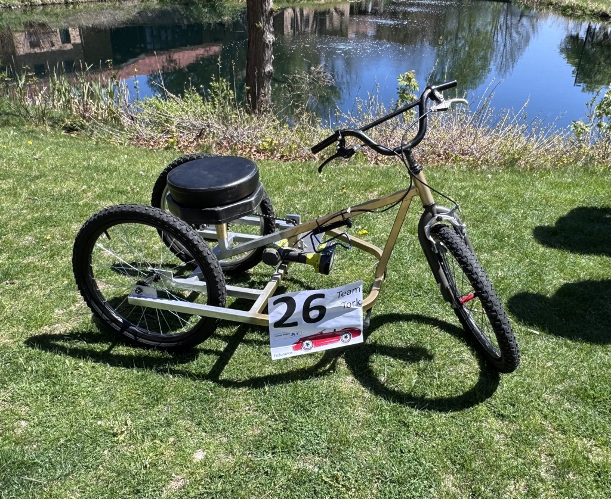
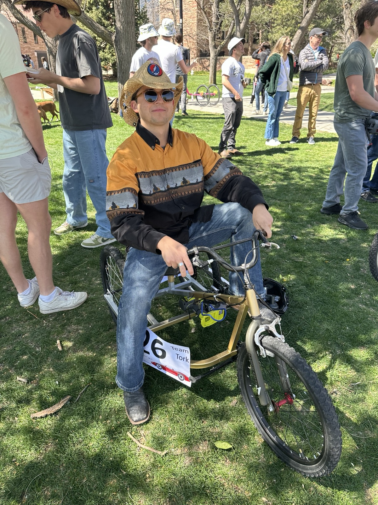
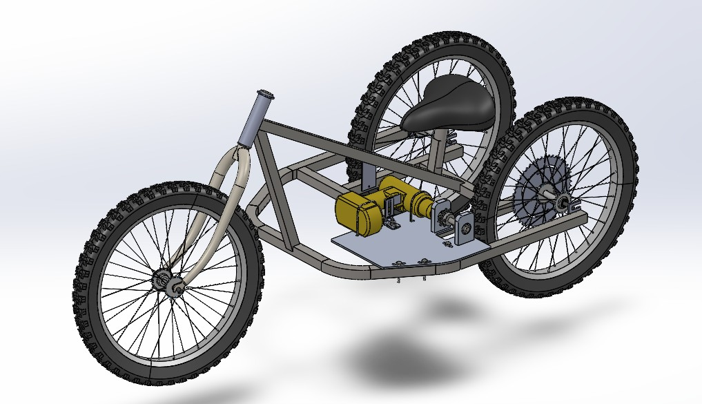
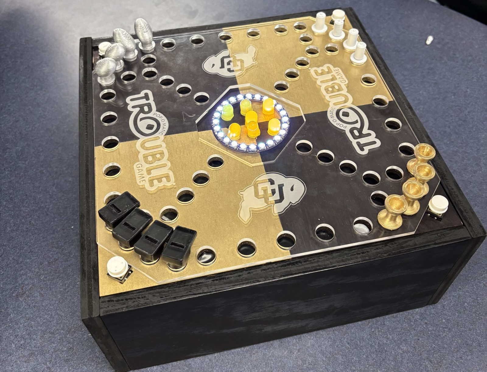
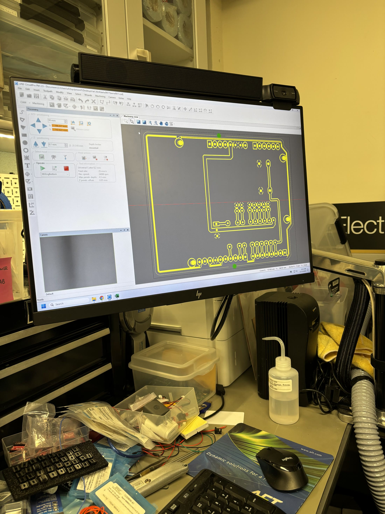
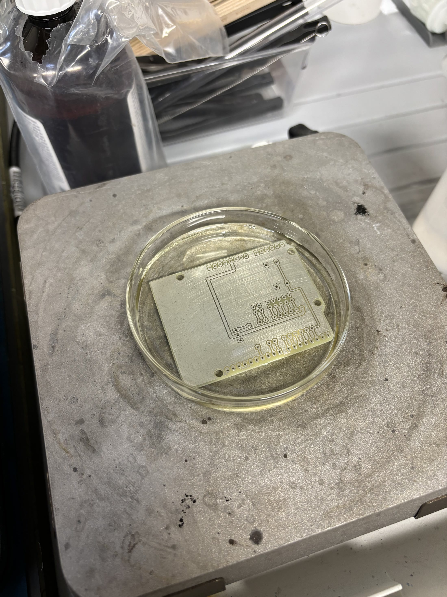
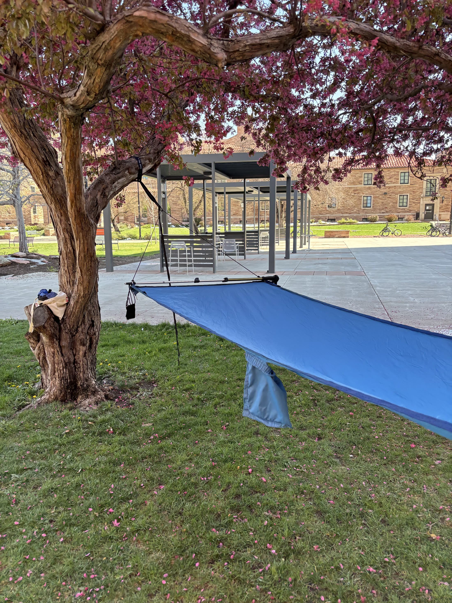
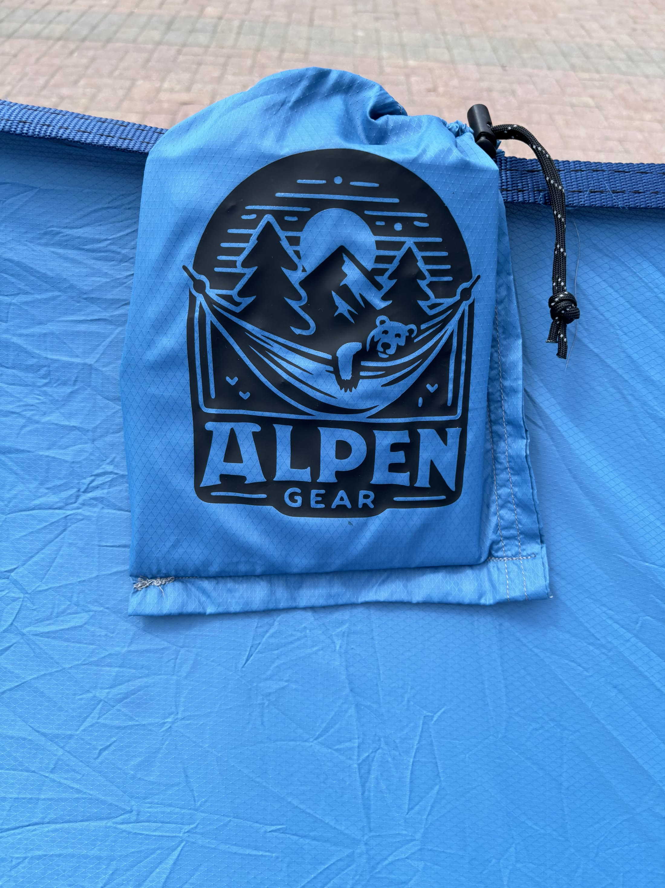
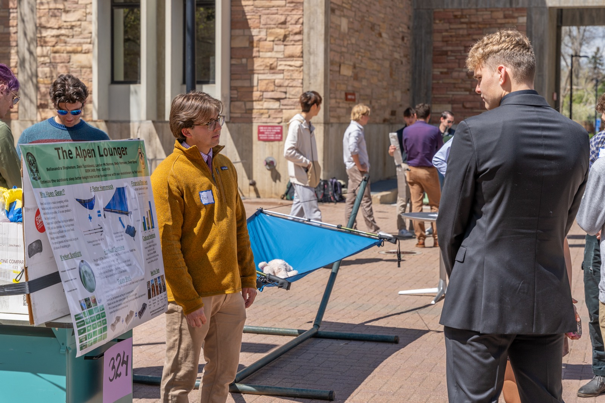
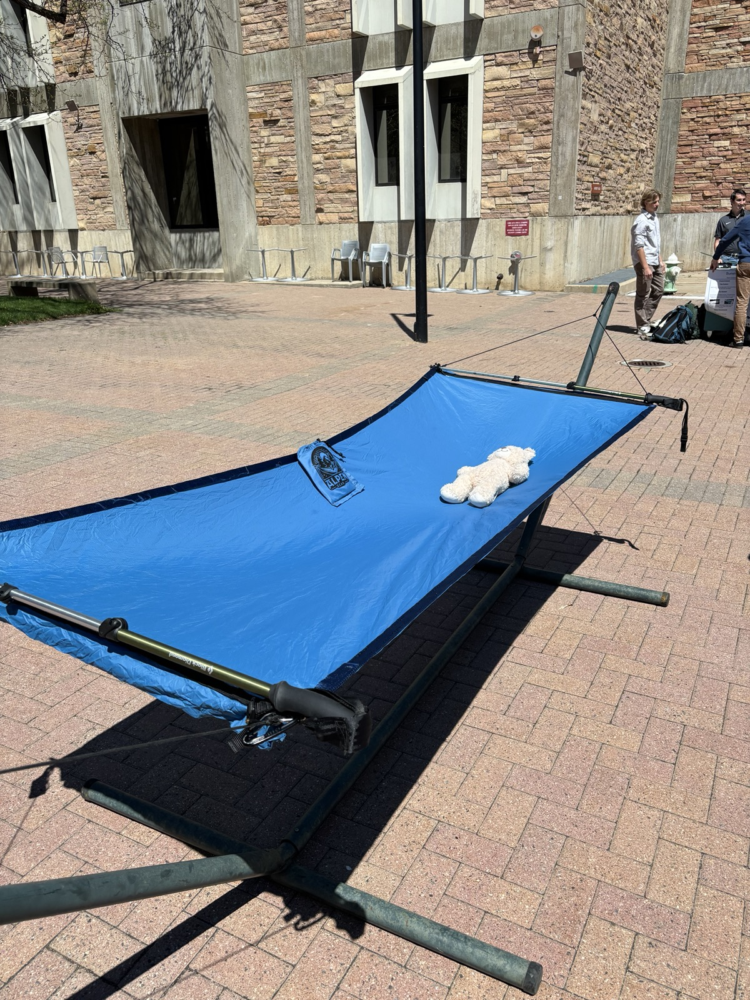

For my Engineering Capstone, I joined Engineering for Social Innovation (ESI), where teams design and launch an original product — rather than solving a sponsor's problem — through an industry-style process. This included Preliminary and Critical Design Reviews, a Manufacturing Review, and a New Venture Challenge pitch for startup funding.
The Product
Our team of six built Gρ Hydroponics, a modular in-home hydroponic grow system that automates watering and lighting to make fresh produce and greenery accessible in small living spaces. Users can connect additional modules as their garden grows, with bulkhead connectors and pogo-pin connectors enabling clean, tool-free assembly between units.
My Role
As Financial Manager, I owned the project's finances end-to-end: building and maintaining the bill of materials, ordering and tracking incoming parts, managing vendor relationships, and running cost projections to keep the team within our $2,000 university budget.
Flow Visualization is a graduate-level mechanical engineering course focused on photographic and videographic techniques for capturing fluid flow — both natural and staged. My portfolio for the class is above: a video of a poured pint of Guinness, followed by stills of motorcycle exhaust, incense smoke, and two cloud studies, each shot and lit to reveal flow patterns that are normally invisible to the eye.
Drill-Powered Bike
Component DesignJunior Year



Component Design challenges six-person teams to design, build, and race a vehicle powered by nothing but a handheld drill. My team, Tork, built a three-wheeled trike with a custom steel frame, drill mount, and drivetrain, competing in the 30-minute endurance event on a $200 budget and under a 50-pound weight limit. As CAD Engineer, I modeled the frame, drivetrain, and mounting hardware in SolidWorks, iterating the design through multiple wheel and frame changes to get it race-ready, then spent plenty of time in the machine shop myself — cutting, bending, and welding the frame and helping manufacture the rest of the trike alongside the team.
Trouble!
Circuits for EngineersJunior Year



Circuits for Engineers tasked teams with building an original circuit around a custom PCB. My team recreated the board game Trouble! — gameplay stayed identical, but we swapped the classic "Pop-O-Matic" dice bubble for an electronic version: seven LEDs, wired to a custom Arduino-shaped PCB, that "roll" a random number 1–6 and light up in a real dice-face pattern when a player presses their button. A 24-LED NeoPixel ring flashes during the roll for extra flair, and the board itself — laser-cut acrylic and wood, CU Boulder themed — houses the electronics out of sight beneath the game surface.
Alpen Lounger
Invention & InnovationSophomore Year




Invention and Innovation challenged teams to design and build something genuinely new — a sort of prequel to Senior Design. My team invented the Alpen Lounger, a backpacking hammock built for the trail: hammocks are light and versatile, but the classic "banana" curl leaves you curled up and struggling to sleep flat. Ours solves that by integrating standard trekking poles into the frame for added stability and a flatter sleep position. We sewed the whole thing ourselves out of ripstop fabric and tested it in the field.